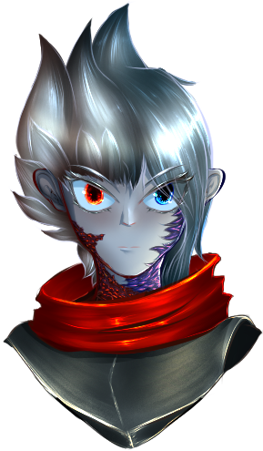

Caballero Taoh
 |
Descrición: |
Los caballeros de Taoh son conocidos por ser excesivamente honorables, respetuosos y formales. |
Posee un ojo de color azul/celeste y otro de un color rojo. Su pelo es plateado y hermoso.Poseen de 1.80 a 2.15m de altitud y son considerados una raza noble, pero a la vez humilde, debido a que comen muy poco para sobrevivir diariamente, dependiendo del equilibrio universal de las cosas su forma de combate cambia drásticamente. |
Su polivalencia y flexibilidad a la hora de combatir los vuelve unos guerreros a tener en cuenta en el campo de batalla, ya que si bien pueden especializarse en algo en específico, siempre podrán dar la mano con aquello que falte. |
Estilo: Guerrero/Bardo |
Atributos: Flexible, Elementalista, Agradable y Humilde. |
Dificultad: ⭐⭐ |
Dificultad de rol: ⭐⭐ |
Requisito de prueba: Común |
Estadísticas del Caballero Taoh: |
+1 Letalidad. |
+2 Agilidad. |
⚖️Equilibrio⚖️: 6 puntos base. |
Al iniciar el combate Empieza con 0 puntos. |
Regenera 3 puntos de ⚖️Equilibrio⚖️ cada que inicia su turno. |
Los 🎯Golpes críticos🎯 aplican 2 de daño por nivel. |
🎯+35% de probabilidad de golpe crítico🎯. |
Todos tus ataques poseen ventaja. |
+10’ pies extra. |
El ⚖️Equilibrio⚖️es la energía base del Caballero de Taoh, con ella el Taoh, posee la capacidad de recrear la magia del bien y del mal a voluntad, no obstante hay cierta magia a la cual podrá tener afinidad siempre y cuando así él la estudie. |
Pueden reconocer las intenciones de las personas con mayor facilidad a la normal, +5 a las percepciones de este tipo. |
El Taoh posee 1 estándar y 2 bonus. |
Posee un 🗡️Ataque básico🗡️ gratuito que se refresca cada turno. |
🥋Disciplina🥋 No consume slot de oficio. |
La DES también se aplica para tus 💪. |
+3 💪. |
Posees un instrumento musical que está ligado a tu alma, puedes escoger cualquier instrumento que sirva para generar música, desde Ocarinas, armónicas, flautas, kalimba, incluso tu propio silbido. |
Habilidades: |
🔥Proyectil Taoh🔥 (E/B) |
Lanzas un proyectil mágico que inflige 1d4 + CAR + 3 niveles de Runa Fuego/Hielo/Luz/Oscuridad. |
Puede utilizarse como ataque a melee con el arma del Taoh. Esto le da ventaja a la hora de atacar/curar. |
60 de alcance. Cuesta 1 de ⚖️Equilibrio⚖️. |
🎻Instrumento Taoh🎻 (E/B/R) |
(Esta música posee 1d20 + CAR +1 por nivel a la probabilidad de conmover a las personas afectadas.) |
En caso de ser utilizado para tratar de calmar las aguas entre personas o con los miembros de la party posee ventaja. |
🛡️Instrumento defensivo🛡️: (R/G/⚖️) |
Anulas el poder de conmover a las personas, pero en su lugar ganas un poderoso escudo de 6PG por nivel por cada punto de ⚖️Equilibrio⚖️ consumido. Consume todos tus puntos de ⚖️Equilibrio⚖️. |
Cuando inicia tu turno nuevamente, el escudo se deshace. |
Puede lanzarse como reacción. |
🗡️Instrumento ofensivo🗡️: (⚖️) |
Consume 2 de ⚖️Equilibrio⚖️ para potenciar a todos tus aliados a 25’ de ti, todos los aliados a los que hayas afectado, poseen ventaja durante todo su turno. (Este beneficio no se aplica para ti mismo.) |
🕊️Vuelo rapaz🕊️ (G) |
El taoh posee la capacidad de volar durante un cortísimo periodo de tiempo, pero a una alta velocidad, esto te da una inercia bastante fuerte a la par de que te permite moverte mucho, como si de un salto de raykonen se tratase. |
Vuela 30’ de largo y 50’ de altitud máxima. Añade 3 niveles de inercia. Consume 1 de ⚖️Equilibrio⚖️. |
🌀Esquiva de flujo🌀 (R) |
Puedes evadir un ataque y moverte 10’ pies sin recibir ataques de oportunidad. |
Daños del Taoh |
Dado de golpe = 1d6 + 18 por nivel. |
Pasivas seleccionables |
🕊️Despiste del vuelo🕊️: |
Mejoraste tus habilidades del vuelo rapaz hasta el punto de que ya te parece lo normal de todos los días. |
Añade +3 de inercia al utilizar 🕊️Vuelo rapaz🕊️. |
+2PG por nivel. |
⚖️Equilibrio guía⚖️: |
Incrementa tu religión a la hora de consultarle cosas al equilibrio en 3 + 1 por nivel. |
+2CA |
⚖️Equilibrio divino⚖️: |
Cuando utilizas los elementos de Fuego/Oscuridad y Hielo/Luz en distinto orden y finalizar el turno sin perder ese orden, las runas aplicadas se sacrifican para darte el siguiente beneficio: |
Adquieres → ⚖️Equilibrio perfecto⚖️ |
⚖️Equilibrio perfecto⚖️ |
→ +2 🛡️Armadura🛡️ por nivel. (Temporal) |
→ + 1 de CA por nivel. (Temporal) |
→ Te curas 6PG por nivel. |
🧠Calma🧠 |
Adquieres la capacidad de conectarte con el mundo de los espíritus de una forma mucho más excepcional que el resto. |
Regeneras un 10% de tus PG máx y regeneras extremidades en el proceso. |
🧠Auto control🧠 |
Cada que inicia la sesión te curas 2 de estrés. |
🔪Letalidad🔪: |
Puedes sacrificar una bonus para transformar tu siguiente ataque en uno Letal. |
🔪Segador🔪: |
+1 Letalidad. |
+5’ pies. |
💪Tenaz💪: |
+1 Tenacidad. |
+2PG por nivel. |
💪🥋Disciplina Taoh🥋💪: |
+1 de 🛡️Armadura🛡️ por nivel. |
+6💪. |
🎯🔥Daño crítico🔥🎯: |
Tus ataques 🎯críticos🎯 adquieren +2 al daño por nivel. |
🎯Dominio crítico🎯: |
+25% probabilidad crítica. |
💎Camino de la piedra💎: |
Desbloquea las runas de la tierra. |
+1 Tenacidad. |
Requisito: No tener camino del viento. |
🌬️Camino del viento🌬️: |
Desbloquea las runas del viento. |
+1 Agilidad. |
Requisito: No tener camino de la piedra. |
🛡️Escudero del equilibrio🛡️: |
Cuando utilizas tu 🎻Instrumento Taoh🎻 de forma defensiva, este escudo puede manifestarse a todos los aliados a 15’ de ti, y los protegerá a todos hasta que sea destruido. |
Esta declaración puede ser realizada incluso fuera de tu turno. |
Incrementa la potencia del escudo de 🎻Instrumento Taoh🎻 en forma defensiva. |
6 → 9 por nivel. |
⚒️Oficio humilde⚒️: |
+2 niveles a un oficio a elección. |
+2 al 🎲 de dicho oficio. |
 |
Novela
|
Novela